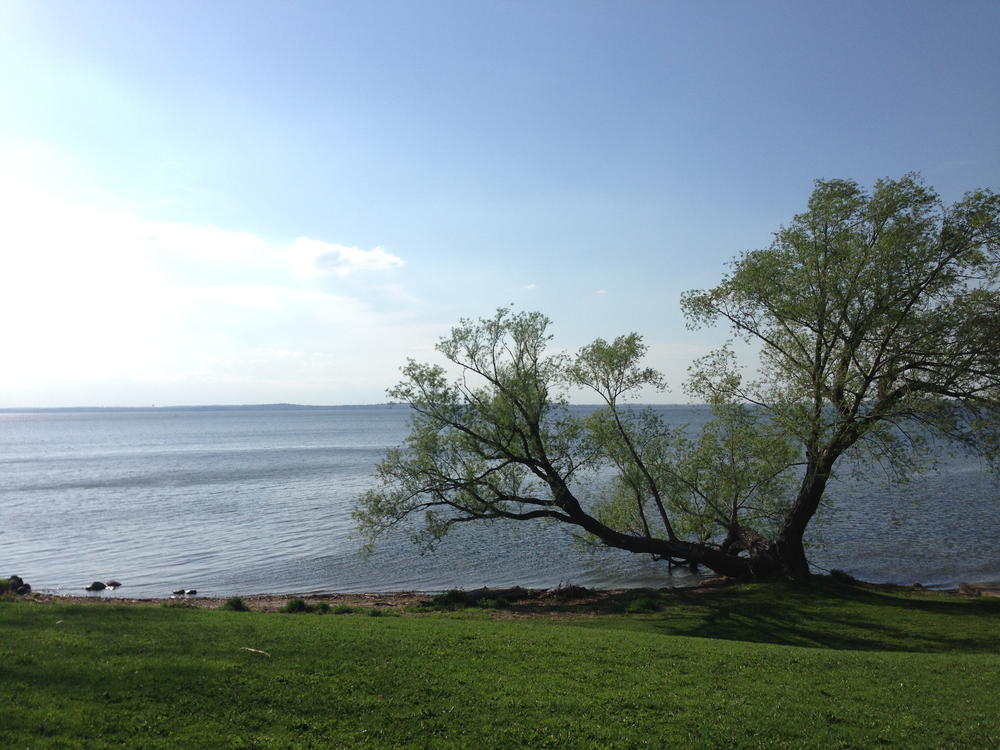
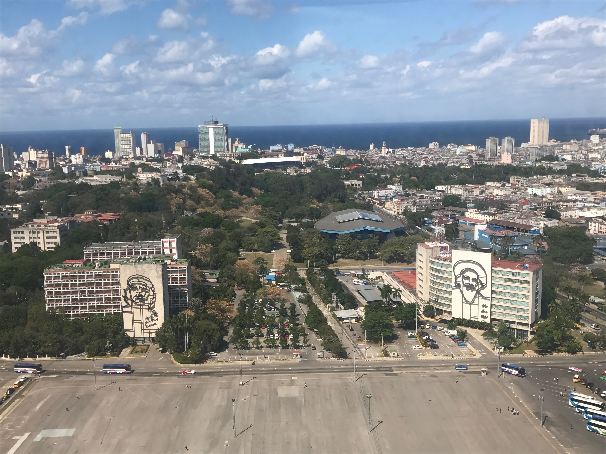
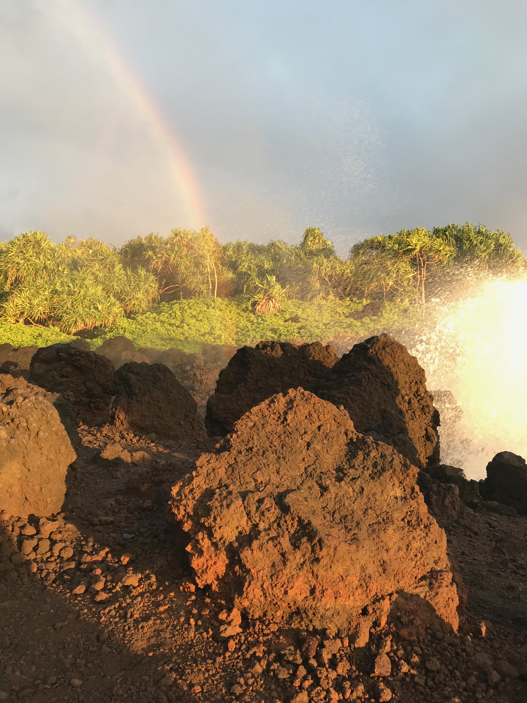

Madtown is my hometown and place of birth. The idyllic little city that rests between two lakes, Lake Monona and Lake Mendota. The term for this unique geographic feature is called an isthmus. Below is a photo of my favorite park on the isthmus, Giddings Park, where you can look out towards Lake Mendota. Before moving to Portland, I lived in Wisconsin my whole life, but I always made a point to travel in the dead of winter!
Last year I got a chance to visit Cuba. I figured it could be now or never, so I went for it. Cuba is special in many ways, the genuine people, lack of wifi, interesting communist society, and countryside full of tabacco. Pictured here is the Plaza de le Revolucion in La Habana where Fidel Castro and other politicians held rallies and addressed the Cuban people. Did you know that Cuban farmers are only allowed to have four cows.
Everything about Maui is beautiful. The island is definitely one of the most dependable vacation destinations, with great weather, good food, activities for everyone, and amazing beaches. The photo below hopefully exemplfies the raw beauty of the island, taken just in the nick of time as the crashing wave hit the light and created a rainbow in the sky! After visiting there, it makes me wonder why I don't move there, since it is a U.S. state after all.
